頂山寺（三芝貝殻廟）/台北縣三芝郷
今回の台湾珍寺巡りは台湾の最北部からスタートを切る。
海沿いの道からググッと内陸部に入るとそこは所々美しい棚田が広がる山間部。
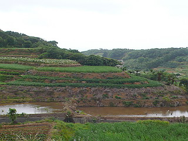
そんな山あいにある頂山寺は別名貝殻廟。
貝殻尽くしのお寺である。
寺に行くと売店のおばちゃんがてぐすね引いてお待ちかね。
廟の前にはトタンの覆屋が架けられていて中の様子は伺えない。
この覆屋は台湾の寺廟では比較的よく見かける。暑いからだろうか。
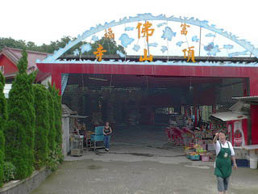
早速覆屋の中に入る。
と、そこには貝細工を巨大化させたような圧倒的な光景が繰り広げられていた。
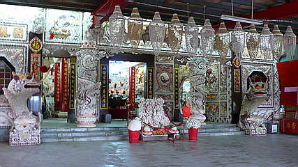
壁、扉、柱、天井…ありとあらゆるモノが貝で埋め尽くされている。
貝尽くしといえば愛知の貝がら公園や蒲郡ファンタジー館などを思い浮かべる御仁も多かろう。
ここも御多分に漏れず強烈なインナーワールド感で蒸れ蒸れ。
一発目のお寺にして早くも脳内物質スパーク状態。
お賽銭がどうのとかお線香がどうのとかいうよりも目の前のディテールに目が釘付けになってしまった。
左右の扉には龍と虎退治の図。
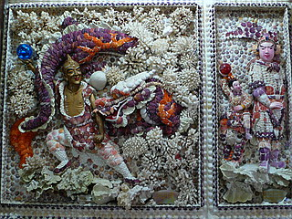 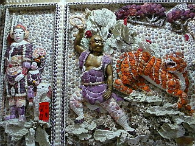
麒麟、虎。目は瑪瑙や翡翠を使用している。
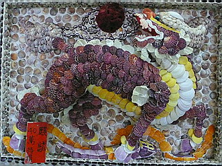 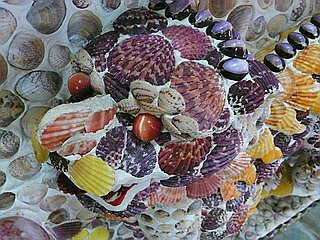
扉と柱にいた魚。貝殻を重ねてウロコ感を見事に表現している。
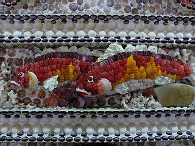 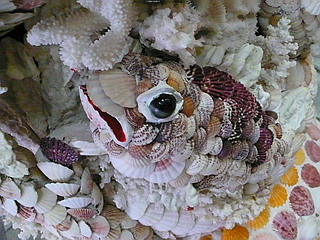
窓枠のコウモリ、花まで貝殻でつくるというマッド徹底っぷり。
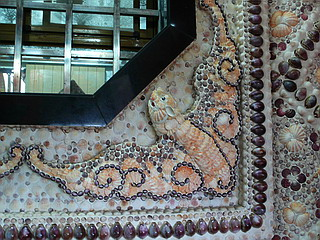 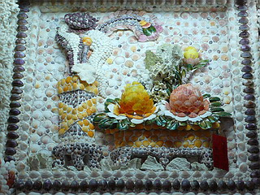
天井にも貝がびっしりと貼り付けられている。
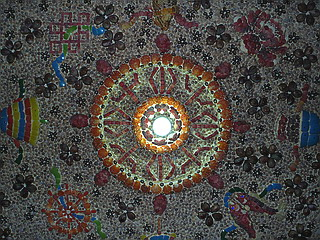
正面外観だけで既に放心状態。
単なる装飾、という括りでは捉えきれない、強い空間的圧力を全身に受けながら堂内に入る。
これを作った人って隙間があったら埋めずにはいられない体質なんだろうなあ。
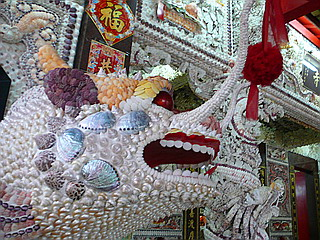 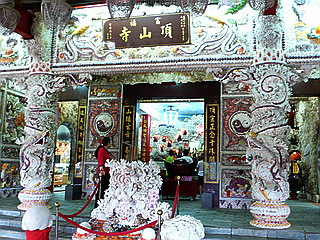
正面の祭壇はサンゴで覆われていた。
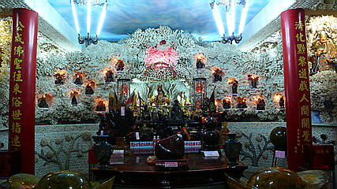
所々窪みがあり、十八羅漢像が納められている。
そして中央にはこんなお方が鎮座していた。
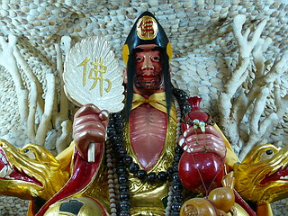
佛マークの団扇、酒が入った瓢箪、薄らヒゲ…以前高雄の鳳山寺で見た済公活仏だ！
この済公活仏、実は台湾ではかなりポピュラーな信仰対象だそうだ。
ちなみにここでは金運をもたらすラッキーゴッドとして祀られていた。
こちらは琥珀製の済公像。
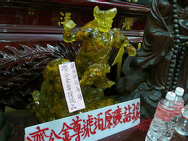
触ると金回りが良くなるから触ってきなさい、とお寺の人に言われたのでとりあえずグイグイ触っときました。
今の所、ご利益はまだ現れてないようなんですけど…
サンゴ尽くしの祭壇に圧倒され、しばらく意識が遠のいていたが、祭壇の左右に小さなアーチを発見。
早速狭いアーチを潜り中に入ってみる。
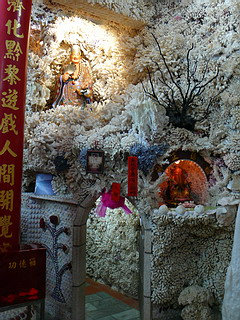 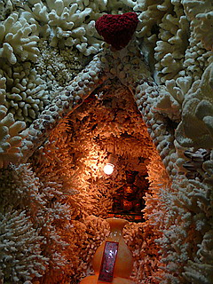
と、そこは想像を絶するサンゴ洞窟。しかも所々に仏像が配置されている過剰サービスったら。
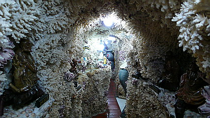
洞窟内は先程の祭壇の裏を一周するように設けられているが、若干枝分かれしていたりして面白かった。
腰を屈めてサンゴの間を縫って進んでいるとまるで本当に海の中にいる気分になってくる。
もっとも海の中にはお釈迦サマとかいないっすけどね。
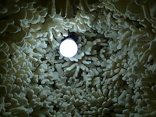 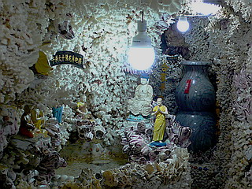
ぐるりと一回りすると、先程入ったゲートと逆サイドにあったゲートが出口だった。
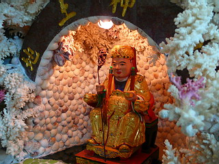 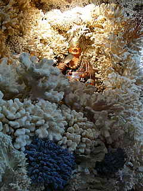
見上げれば天井から吊るされた大きな太鼓に謎のマシンが。
まるで拷問用具のような自動太鼓叩き器だ。
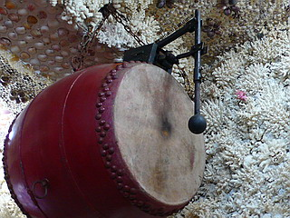
しばらく見入っているとお坊さんがやってきて聞酒壺という大きな酒壺に入っているお酒の匂いを嗅げ、といわれたのでなされるがままに匂いを嗅ぐ。いつも酒を飲んでいた済公活仏にちなんでの事なのか。何だか判らないがこれも金運向上のため。とりあえず力の限り目一杯吸っておきました。酒くさ〜。
それでもご利益はまだ現れてないようなんですけど…
この貝殻廟は民国85（1996）年から2年間かけてつくられたという。
意外と新しい貝ワールドなのだ。
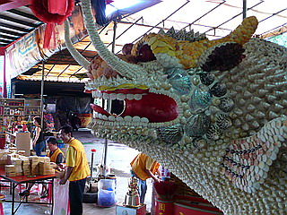
覆屋には線香や金紙（死者に奉納する専用紙幣）などを売っている。
廟の脇には広大な墓地があった。
次のお寺へＧＯ！
台湾大佛列伝3
珍寺大道場 HOME